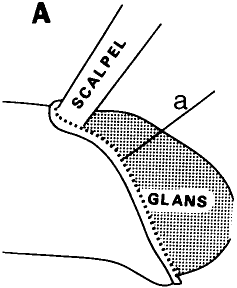
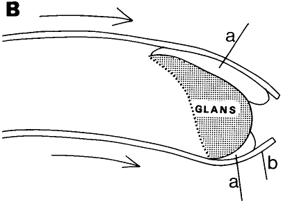

THE CIRCUMCISION REFERENCE LIBRARY
*Presented at the Society for Ancient Medicine, Vancouver, B.C., December, 1978.
[CIRP Note: "Celsus" refers to Aulus Cornelius Celsus, fl. AD 14-37.]
The Greeks and Romans, who celebrated the nude human body in art and sport, viewed any abnormal appearance of the genitals with distaste, even amusement. Surgical procedures were developed in the Hellenistic period for those who had undergone circumcision or had been born with little or no prepuce and who subsequently wished to cover their bared glans in order to move inconspicuously in Greek and Roman society. Celsus, writing during the reign of Tiberius (A.D. 14-37), describes two such operations in De medicina (7.25.1). His account of decircumcision raises important medical and historical questions.
That one can call decircumcision -- restoration of the prepuce -- a plastic surgical procedure is suggested by Celsus. He introduces his operations in this way: 'And if the glans is bare, and the man wishes for the look of the thing to have it covered, that can be done.' Decorum rather than health is the motive by using decoris causa ('for the sake of appearance'), Celsus implies that an uncovered glans was socially unacceptable in Rome of the early empire, a Rome that had adopted the Greek institution of public nudity in the gymnasium and the baths. Loss or lack of a prepuce may have compelled some individuals with this condition to undergo the operations that Celsus describes in order to restore it. Before considering some historical implications, I shall present, first, Celsus's description of reconstruction of the prepuce and, second, decircumcison proper.
After his introductory sentence and statement of the operation's purpose Celsus compares prognoses according to different physical types the glans can be covered "more easily in a boy than in a man; in one in whom the defect is natural than in one who after the custom of certain races has been circumcised (quiquarundium gentium more circumcisus est); and in one who has the glans small and the adjacent skin rather ample, while the penis itself is shorter, than in one in whom the conditions are contrary" (7.25,1.A.20-23). The operation would be easier in a boy than a man since there would be a greater proportion of skin to penis. Healing would be more rapid at an early age.
Second in order of ease and the best adult candidate for such surgery would be a man whose prepuce is naturally insufficient to cover his glans. The reason is clear from Celsus's operation for this condition -- some skin already exists in the prepuce to stretch over the glans. In contrast, those who have been circumcised require a different, more extensive operation that entails raising the skin from the corona. In an adult he predicts a better result when there is a greater proportion of skin to penis -- the same factor that makes a boy a better candidate for such surgery than an adult.
After indicating prognoses, Celsus first describes an operation for the congenitally deformed penis with an insufficient prepuce:
At this point in the text (7.25.1 B.29) there is a lacuna, which Marx attempted to fill, completing the sense of the final sentence in this way: <It if and all, at not or little distended I? skin the bared been has penis of Part enough large a that seen is> the breadth of the wound above supplies sufficient covering" (7.25.1 B.29-30). Celsus's test concludes "But until the scar has formed it must remain tied, only a small passage being left in the middle for the urine." (725.1.C 30-1).The prepuce around the glans is seized, stretched out until it actually covers the glans, and there tied. Next, the skin covering the penis just in front of the pubes is cut thorough in a circle until the penis is bared, but great care is taken not to cut into the urethra, nor into the blood vessels there. This done, the prepuce slides forwards, towards the tie, and a sort of small ring is laid bare in front of the pubes, to which limit is applied in order that flesh may grow and fill it up . . . (1.25.1 B,24-9)
Celsus's description of decircumcision follows immediately:
But in one who has been circumcised the prepuce is to be raised from the underlying penis mound the circumference of the glans by means of a scalpel. This is not so very painful, for once the margin has been freed, it can be stripped up by hand as far back as the pubes, nor in doing so is there any bleeding, The prepuce thus freed is again stretched forwards beyond the glans: next cold water effusions are freely used, and a plaster is applied round to repress severe inflammation. And for the following days the patient is to fast until nearly overcome by hunger lest satiety excite that part. When the inflammation has ceased, the penis should be bandaged from the pubes to the corona; over the glans the plaster is applied with the other end of the probe. This is done in order that the lower part [between the corona and pubic area] may agglutinate, whilst the upper part [the new foreskin covering the glans] heals without adhering. (7.25.1.C.1-10)
The two operations are based on different principles. In the first (Fig. 1), where some foreskin is naturally present, a shallow cut is made around the base of the penis, and the skin is peeled down over the glans like a glove to form a new foreskin. This reconstructed prepuce is formed of a continuous, folded-over layer of exterior skin attached to the original prepuce. No plaster dressing is needed in this operation to prevent the now foreskin from sticking to the glans since the skin next to the glans is preputial dermis. This double layer of skin is then tied to prevent its slipping backward. Celsus does not mention the strong pull exerted on the skin by the retraction of the annular scar around the base of the penis. A modern analogy confirms the feasibility of Celsus's first procedure. Penn describes the reconstruction of the prepuce of a man who wished to reverse his circumcision. Penn's procedure conforms to Celsus's first operation in all particulars except that he applies a free graft of skin to the raw area from the edge of the new prepuce to the base of the penis to prevent scarring and to facilitate healing. Decircumcision in the second operation, the actual decircumcision (Fig. 2). no cut is made around the base of the penis. The skin covering the penis is freed by dissection, then pulled forward over the glans. Unlike the restored prepuce of the first operation, the new covering of the glans is not exterior dermis, but the raw underside of a full-thickness tube of skin. Cold water effusions ease the pain and swelling, while the application of a nonadherent plaster dressing around the glans and under the new prepuce aid the growth of a new epithelial surface next to the glans`* In De medicina (5.19) Celsus gives two recipes for healing plasters that especially repress inflammation and create scar tissue. Both contain lead oxide, the ancient version of mercury ointment.
*The raw undersurface of the new prepuce would rapidly form a new epithelial layer due to the ability of the skin in this region to regenerate, This phenomenon is the basis of. corrective surgical procedure for hypospadias.
"There is also one (plaster), almost red in color, which is found to bring wounds rapidly to a scar.. It contains incense 4 Gm., resin 8 Gm., copper scales 16 GM., litharge (oxide of lead) 80 Gm., wax 400 Cm.. oil 250 c.cm." (5.19.5) "As well, there is one called rhaptousa (a composition which `sews up' the wound) because it agglutinates, consisting of bitumen and split alum 16 Gm., litharge 160 Gm., and 250 c.cm. of old oil." (5.19.6) Spencer describes litharge as "oxide of lead separated after heating lead and silver ores; litharge was heated with oil to make plaster." (vol. 2. xiviii) Celsus's use of lead plaster for suppressing bleeding and inflammation (5. 19.1), cleaning wounds (5.52). and healing nasal ulcerations (6.8.1.A) suggests its antibacterial properties.
FIGURE 1. Operation for congenitally deficient prepuce–: (a) line of incision; (b) subcutaneous areolar tissue; (c) skin; (d) reconstructed prepuce; (e) tie.
The chief difficulty of both procedures, which Celsus does not fully answer, is how the skin was prevented from rob; retracting without sutures. Presumably the pressure of the bandages, applied after the inflammation had ceased, was meant to anchor the skin In the new position. Another question is whether a patient who had undergone either operation could have engaged in sexual intercourse. Celsus's injunction that they fast "lest satiety excite that part" (7.25.1.C.7) testifies to the unimpaired virility of his patients immediately after decircumcision. Due to the loose connection between the skin] and the deep underlying structure of the penis, a relatively-easy and almost bloodless separation could have been made. If performed correctly, Celsus's operation would have affected only the skin: the underlying structure of the penis, blood supply, and physiology of erection would have remained unaffected. Implications: Who would have undergone these procedures? Celsus distinguishes between patients with congenitally deficient foreskins and those who have been circumcised "after the custom of certain races."
Celsus's Decircumcision Operation 

FIGURE 2. Decircumcision procedure. (A) First, skin is cut around corona (a) and loosened along stem of penis. (B) Skin is pulled over glans, and after inflammation ceases, plaster (a) is packed between new prepuce (b) and glans to prevent raw under surface of stretched penile skin from adhering.
Were these certain races? The Jews seem most obvious but they were not the only circumcised peoples known to the Romans. The Egyptians also practiced circumcision, although by Roman times it was limited to the priestly caste. In addition, Arabs, Ethiopians-Colehians, and Phoenicians were also circumcised.
While Celsus does not refer explicitly to the Jews, a glans bared by circumcision was associated with Jewishness in Rome during the early empire. Horace uses the adjective curtus (cut, shortened, mutilated) describe an easily recognizable national characteristic when he mentions the Jews (curtis Judueis) (Satire 1.9.70). Petronius has Cito say, "Circumcise us, that we may appear to be Jews." (Satyricon 102.14) Circumcision in this context is one of several physical signs of nationality, along with the white face of the Gaul and the pierced ears of the Arab. Tacitus expresses his opinion that the Jews "have instituted circumcising the genitals in order to be distinguished by this difference." (Historia 5.5) This statement occurs in a list of Jewish customs that Tacitus finds "base and abominable, persisting due to their depravity." His catalogue includes the Jews temple tax, their clannishness, refusal to sleep with non-Jewish women, food laws, lust, burial customs, and refusal to honor the Roman Emperor in short, their rejection of all things Roman. Suetonius (Domitian 12.2) implies that circumcision was the criterion for identifying a Jew; he recalls the crowded public examination of a man in his nineties to see if he were circumcised and so liable to the fiscus Iudaicus.
It is difficult to separate the Romans' responses to circumcision per se from their reactions to the Jews, Tacitus does not malign circumcision more than other Jewish traits he finds offensive. It is also difficult to appreciate whether Roman satirists found the appearance of the circumcised penis itself funny or relied on any mention of a Jewish trait to raise a laugh. One encounters this problem in Petronius description of a clever slave: "Yet he has two faults which if he did not have, he would be perfect: he is circumcised, and he snores." (Sat. 68.8) Did the surprising collocation of circumcision and snoring strike a Roman as funny, or was Petronius making a "Jewish joke?" Martial describes an athlete whose large penis shield (some elaborate version of a fibula)* fell off in the middle of the palestra.
*The fibula was usually a circular pin inserted in the edges of the uncircumcised Foreskin to prevent the prepuce from being retracted, (Cf. Celsus 7.25.3) Comic actors and singers often under-went infibulation to prevent intercourse which was believed harmful to the voice. In Martial 7.82 the fibula seems to have been a sheath that covered the glans. revealing his circumcised glans:
So great a fibula covers Menophilus's penis that it alone would suffice all the comic actors. I had believed (for we often bathe together) that this fellow was taking care to spare his voice, Flaccus. But while he exercised in the middle of the palestra, in public view. his fibula slipped -- he was circumcised! (7.82)
It is not clear where the humor lay for a Roman in Menophilus's unmasking. Was his disclosure funny because it indicated he was a Jew? Or was Martial tapping an unchanging human response to the revelation that someone is other than what he purports to be? Perhaps a modern analogy would be the amusement caused if the bikini top of a voluptuous film star fell off, revealing that she was flat-chested. Whatever it was about Menophilus's circumcision that amused Martial, Menophilus was embarrassed enough about his condition to keep up his disguise, even when bathing with his friend.
The earliest evidence for decircumcision connects this operation with the Jews. I Maccabees 1:14-15 (c.167 B.C.) contains a reference to the reconstruction of the foreskin:5
The collocation of gymnasium and decircumcision reminds us that complete nudity was customary for all exercises and sports performed in a Greek gymnasium. Celsus's description in De medicina, nearly two centuries later, provides the next solid reference to the decircumcision operation. Then, in I Corinthians 7.18 (mid first century A.D.) Paul writes "Is any man called, who is circumcised? Let him not become uncircumcised" Paul's prohibition suggests that the operation was known among Jews and gentiles like at a date very close to that of Celsus. The coincidence of the first recorded mention of decircumcision during the reign of Antiochus IV in I Maccabees 1:14-15, with its reference to the Hellenistic institution of the gymnasium and the beginning of the persecution of the Jews, suggests that decircumcision was practiced by the Jews as one of the first steps in assimilation.*"Thereupon they built a gymnasium in Jerusalem according to the customs of the gentiles and made foreskins for themselves, rebelling against the sacred covenant."
*Analogous phenomena include the Jews' perennial inclination to change their names in the Diaspora, and the recent popularity of reductive rhinoplasty in Twentieth Century America.
Motives for assimilation fall into two categories (1) escape from persecution. and (2) improvement of one's social and economic position. In Rome of the early first century A.D., when Celsus was writing no secure evidence exists in either category for Jews who would have undergone Celsus's operations. In A.D. 19 Tiberius expelled 4,000 Jews from Rome, sending them to Sardinia for military service. It is possible that some Jewish males of military age (18 to 45) were decircumcised to escape the sentence. In the second category the evidence is no more encouraging. The social educational and economic status of most practicing Jews in Rome was low, excluding them from gentile social circles where decircumcision would have enhanced their chances of public success and economic improvement.
The situation was different in Alexandria, where Celsus may have obtained his operation. It is highly likely that wealthy educated, newly apostate Jews attempted to gain Greek citizenship for their sons, which carried with it the double advantage of exemption from the laographia, a tax levied on all males who were not Greek citizens,' and social recognition. The criterion for full Greek citizenship or, next best, a reduced rate of payment of the laographia was an education as an ephebos in the gymnasium.' Second-generation Hellenized Jews probably abandoned circumcision entirely.
To sum up, circumcision, associated particularly but not exclusively with the Jews, constituted an embarrassment in the Roman world of the first century A.D. For Jews and other circumcised individuals who wished to pass as normal in their society. Celsus described a relatively easy plastic surgical procedure that could remove the mark of circumcision. In addition, non-Jews who were born without foreskins and also were considered disfigured according to Hellenistic and Roman values may have undergone Celsus operation for reconstruction of the prepuce.
3900 Chestnut StreetA: Corpus Papyrorum
Celsus recommends linamenta, dressed flax (L. usitatissimum) to arrest bleeding (5.26.23.C, 7.30.3.C); to repress the fungation of flesh (5.26.30.C); to dress wounds (7.14.4, 7.19.9); to prevent separated edges of skin from reuniting. and to help the growth of the flesh between (7. 7 9 B).
http://www.cirp.org/library/restoration/rubin/